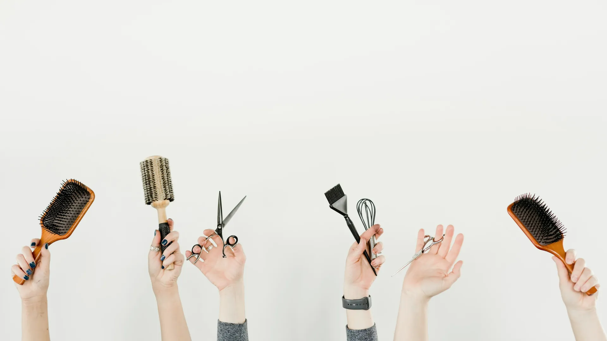

Landare-kolorea
Amla
Indiako fruitu bat, hautsetan, landare-nahasketei gehitzen zaiena tonua leuntzeko, distira emateko eta zuntza indartzeko.
Landare-koloreztatzea landareekin eta buztinekin
La Pelu · Glosarioa
Balayage, matiz, henna, keratina, fade… Besaulkian entzuten duzun guztia, lerro batean eta teknizismorik gabe.
Landare-kolorea
Indiako fruitu bat, hautsetan, landare-nahasketei gehitzen zaiena tonua leuntzeko, distira emateko eta zuntza indartzeko.
Landare-koloreztatzea landareekin eta buztinekinTratamendua
Osagai aktiboen dosi kontzentratua (elikadura, erorketaren aurkakoa, distira), garbitu ondoren aplikatzen dena.
Elikadura- eta hidratazio-tratamenduakTratamendua
Kutikula zigilatzen duen tratamendua, ileak inguruko hezetasuna xurga ez dezan eta harrotu ez dadin.
Leuntzeak eta keratina, frizzaren aurkaTeknika
Oso metxa finak eta errotik hurbil, haurren ilearen argitze naturala imitatzen dutenak. Argi oso sotila ematen dute.
Metxak, balayagea eta islakTeknika
Eskuz margotutako argiztatzea, degradatuan eta erroa markatu gabe. Modu naturalean hazten da eta ukitu gutxi eskatzen ditu.
Metxak, balayagea eta islakIle-mozketa
Masailezurraren altuerako ile-mozketa (bob) edo masailezurraren eta sorbalden artekoa (long bob). Zuzena, testuraduna edo kopetearekin.
Emakume, gizon eta txikientzako ile-mozketakLandare-kolorea
«Henna neutroa» izenez ezagutzen den landarea. Distira eta gorputza ematen ditu eta, nahasketan, isla urrekarak ileurdinen gainean.
Landare-koloreztatzea landareekin eta buztinekinKolorea
Kolore batek zenbat ileurdin estaltzen dituen: denak, zati bat (urtze naturala) edo lehenengoak bakarrik.
Koloreztatzea eta ileurdinen estalduraKolorea
Aplikazio eta esposizio laburreko koloreztatzea, denbora gutxi dagoenean ileurdinak estaltzeko.
Koloreztatzea eta ileurdinen estalduraKolorea
Tonu ez-naturalak (arrosa, lila, urdina, berdea…), distira dezaten normalean oinarri argitua behar dutenak.
Fantasiazko koloreakIle-osasuna
Ilearen kanpoko geruza, ezkatez osatua. Itxita dagoenean argia islatzen du eta distira ematen du; irekita, ilea zakar ikusten da eta harrotu egiten da.
Teknika
Ilearen pigmentua kentzen duen prozesua, argitzeko. Zuntza babesteko kontrolatzen da.
Metxak, balayagea eta islakIle-mozketa
Garondoan eta alboetan oso laburretik goian luzeagora igarotzen den ile-mozketa, jauzirik gabe.
Emakume, gizon eta txikientzako ile-mozketakIle-mozketa
Kaltetutako puntak bakarrik moztea, ilea indartsu ikus dadin eta osasuntsu hazi dadin.
Emakume, gizon eta txikientzako ile-mozketakIle-osasuna
Buru-larruazalaren eta zuntzaren azterketa, edozein tratamendu edo produktu kimikoren aurretik.
Ile-diagnostiko pertsonalizatuaTresna
Lehorgailuaren osagarria, airea banatzen duena kizkurrak hautsi eta harrotu gabe lehortzeko.
Kizkurrak, permanenteak eta moldeatuakOngizatea
Zirkulazio linfatikoaren estimulazioa, atxikitako likidoak kentzeko. Hori da presoterapiak egiten duena.
PresoterapiaIle-osasuna
Ilea bera: kutikula, kortexa eta medula. Hura zaintzea bere elastikotasuna, distira eta erresistentzia zaintzea da.
Ile-osasuna
Azaleko barrunbe txikia, ile bakoitza jaio eta hazten den lekua.
Ile-laser bioestimulatzaileaOngizatea
Azala sailkatzeko modua, eguzkiaren aurrean nola erreakzionatzen duen kontuan hartuta. Gomendatutako solarium-denbora erabakitzen du.
SolariumaLandare-kolorea
Landarea (Lawsonia inermis), tonu gorrixka eta kobrekaretan tindatzen duena, indartzen duena eta distira ematen duena. Landare-nahasketa askoren oinarria da.
Landare-koloreztatzea landareekin eta buztinekinTratamendua
Hidratatzea ura ematea da (ile lehorra eta elastikotasunik gabea); elikatzea lipidoak ematea (ile zakarra, punta irekiak).
Elikadura- eta hidratazio-tratamenduakLandare-kolorea
Tonu hotz eta ilunak ematen dituen landarea. Hennarekin nahastuta, gaztainkarak eta beltzak ematen ditu.
Landare-koloreztatzea landareekin eta buztinekinTratamendua
Ilearen proteina. Keratina-tratamenduak zuntza bete eta leuntzen du, bolumena eta frizza kontrolatzeko.
Leuntzeak eta keratina, frizzaren aurkaIle-osasuna
Intentsitate baxuko argia, folikulua estimulatzen duena ile-erorketa geldiarazten laguntzeko. Ez du zerikusirik laser bidezko depilazioarekin.
Ile-laser bioestimulatzaileaAkabera
Leun leundua, distira biziarekin, ispilu baten modukoa.
Leuntzeak eta keratina, frizzaren aurkaKolorea
Tonuaren azken doikuntza, nahi ez diren islak (horiak, laranjak) neutralizatzeko edo berotasuna emateko.
Metxak, balayagea eta islakTeknika
Argia eta dimentsioa emateko argitutako edo ilundutako ile-sortak: tradizionalak, finak, premium, vintage…
Metxak, balayagea eta islakTestura
Gorputza ematen duen uhindura leun eta iraunkorra. Permanente bat baino arinagoa da.
Kizkurrak, permanenteak eta moldeatuakTeknika
Erro ilunetik punta argietara doan degradatu nabarmena. Bertsio leunari sombré deitzen zaio.
Metxak, balayagea eta islakKolorea
Tindagaiarekin nahasten den produktua, kolorea gara dadin. Haren bolumenak zenbat argitzen duen adierazten du.
Koloreztatzea eta ileurdinen estalduraTestura
Ilearen forma modu iraunkorrean leunetik kizkurrera aldatzen duen prozesua.
Kizkurrak, permanenteak eta moldeatuakIle-osasuna
Ileak ura eta produktuak xurgatzeko eta atxikitzeko duen gaitasuna. Ile oso porotsua lehenago lehortzen da eta kolorea lehenago galtzen du.
Kolorea
Parafenilendiamina: tindagai kimiko askoren pigmentua eta alergien ohiko arrazoia. Landare-koloreztatzeak ez du.
Landare-koloreztatzea landareekin eta buztinekinOngizatea
Aire-presioko botekin egindako masajea, zain-itzulera eta drainatze linfatikoa aktibatzen dituena.
PresoterapiaOrrazkera
Ilea eusten den orrazkera (mototsa, txirikordak, erdi-bilduma). Ezteietan eta ekitaldietan ohikoa.
Bildumak, ezkongaiak eta ekitaldiakKolorea
Oinarrizko tonuaren barruko kolore-ukituak, distira eta mugimendua ematen dituztenak.
Koloreztatzea eta ileurdinen estalduraKolorea
Amoniakorik gabeko kolorea, distira eta ñabardura ematen dituena eta garbiketekin leuntzen joaten dena.
Koloreztatzea eta ileurdinen estalduraEtxeko zaintza
Garbitzaile leunak dituzten xanpuak, kolorea eraman eta ilea lehortzen ez dutenak.
Kolorea
Kutikula irekitzen duen eta pigmentua barruan uzten duen koloreztatzea. Ileurdinak estaltzen ditu eta ilea hazi arte irauten du.
Koloreztatzea eta ileurdinen estalduraIle-osasuna
Buru-larruazalaren eta ilearen behaketa handitua, mikrokamera batekin. Ile-diagnostikoaren oinarria da.
Ile-diagnostiko pertsonalizatuaIrudia
Aurpegiaren proportzioen azterketa, gehien mesede egiten duten ile-mozketa, bolumena eta kolorea aukeratzeko.
Irudi-aholkularitza eta bisajismoaEz dugu hitz hori aurkitu. Idatziguzu eta azalduko dizugu.
Covak pozik azalduko dizu edozein zerbitzu hasi aurretik.
Jarraitu gaitzazu
Egin berri ditugun lanak, Covaren trikimailuak, promozioak eta ordutegiko abisuak. Lehenik Instagramen eta Facebooken argitaratzen ditugu.